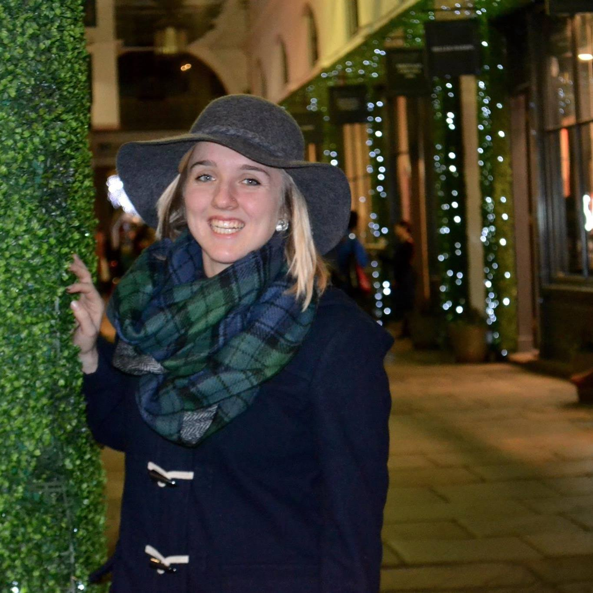

About | PR Portfolio | Photography | Contact
About Megan


Hey everyone! My name is Megan Burpo and I am from Fairfax, Va just 30 minutes away from Washington, DC. While I love having our nation's capital in my backyard, I can't get enough of my college home, Blacksburg, Va. I will be graduating from Virgina Tech in May 2016 earning a major in public relations and a minor in techincal and professional writing.
After graduation I am persuing a career in public relations. I have a passion for cris comunication, stategic thinking, and story telling. I have a background in both non-profit PR and agency work for commerical clients. My well-roudned experiences have taught me that no day in PR is the same, and adaptability is key. The fast-paced lifestyle that PR provides matches the energy I bring into my work. To learn more about my PR expereince visit my portfolio!
When I am not in class you can find me outside being active. Whether hiking in the blue ridge mountains or training for my second half marathon, I love spending time outside. I was raised by two loving parents who instilled in me a strong desire for traveling. My dad was raised as a Navybrat and entered into a career in the Navy himself and choose to raise my siblings and I the same. My mom was born and raised in Manchester, Uk and I spent every summer visiting my grandparents overseas. I took my passion for travel into my own hands when I choose to study abroad in Dublin, Ie in 2014. It was an amazing time full of beuatiful views, new friends, and a little bit of Guiness. This trip also inspired me to delve into the art of photography. To get a further glimpse of my hobbies and interests check out my phototgraphy page!